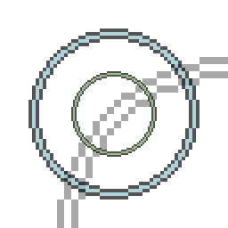
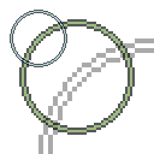
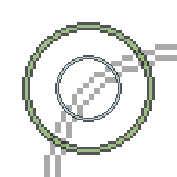
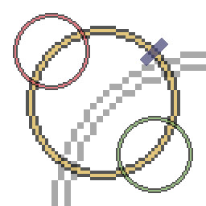
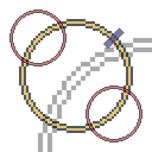
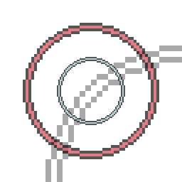
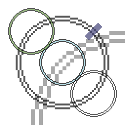

Spell-Scribing
Extensive Revision
(Scribing Pattern)
Can be used to add a new subcircle to any circle.

When Extensive Revision is drawn in the blue circle, the green circle will be created.
Inner Revision
(Scribing Pattern)
Adds a new inner circle to an existing circle. Inner circles act like glyphs, and can be activated as such. See Spell Fragments.
When Inner Revision is drawn in the outer blue circle, the green circle will be created.
An inner circle acts like a glyph, either returning its value, or being executed with arguments.
When no subcircles are connected to it, the circle containing the inner circle will return the inner circle as a spell fragment. This can be used for meta-programming, recursion, and permanent storage of dynamic spells, among other things.
When the circle does have connected subcircles, it executes the inner circle directly as if it was called by a Grand Stratagem, using the results from the subcircles connected to the outer circle as parameters.
This can be very useful when needing to use one value in multiple places, as inner circles and spell fragments are the only way to move fragments back to the leaves of a tree.
Split Revision
(Scribing Pattern)
Replaces the circle it is drawn in with a new circle, with the old circle as a subcircle.
When Split Revision is drawn in the blue circle, it adds it as a subcircle to the newly created green circle.
Growth Revision
(Scribing Pattern)
Nests the circle it is drawn in inside another circle as its inner circle.
When Growth is drawn in the blue circle, it adds it as an inner circle to the newly created green circle.
Grafting Revision
(Scribing Pattern)
Removes the circle it is drawn in. Will replace it with the original circle's first subcircle if available.
When Grafting is drawn in the yellow circle, it and the red circle are deleted and replaced by the green circle.
Pruning Revision
(Scribing Pattern)
Removes the circle it is drawn in and any attached subcircles.
When Pruning Revision is drawn in the yellow circle, it and the red circles are deleted.
Ascension Revision
(Scribing Pattern)Expands the circle it is drawn in to replace its outer circle.
When Ascension Revision is drawn in the blue circle, it deletes and replaces the red circle.
Devotion Revision
(Scribing Pattern)
Adds a new subcircle to the outer circle.
When Devotion Revision is drawn in the blue circle, the green circle is created.
Shifting Revision
(Scribing Pattern)
Shifts the subcircles of the circle it is drawn in, clockwise, so that the last subcircle is now the first.
Reverse Shifting Revision
(Scribing Pattern)
Accomplishes the opposite of the Shifting Revision, moving subcircles counter-clockwise.
Shuffling Revision
(Scribing Pattern)
Swaps the first subcircle with the second subcircle.
Notulist's Revision
(Scribing Pattern)
Reads a spell from the user's offhand and grafts it onto the spell currently being edited, replacing the circle it is drawn in.
Inner Notulist's Revision
(Scribing Pattern)
Reads a spell from the user's offhand and places it as a glyph in the center of the circle it is drawn in.
Grand Revision
(Scribing Pattern)
Replaces the glyph of the circle it is drawn in with the result of executing the user's offhand spell. Requires possession of a Mirror.
Plagiarist's Revision
(Scribing Pattern)
Copies the circle it is drawn in to the user's offhand.
Interpretation Revision
(Scribing Pattern)
Creates a pattern literal of the pattern contained within the circle it is drawn in.
Address Revision
(Scribing Pattern)
When this scribing pattern is drawn, the address of the circle this pattern was drawn in is written to the item in your other hand.